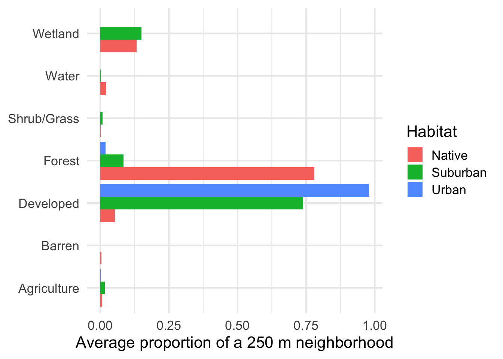
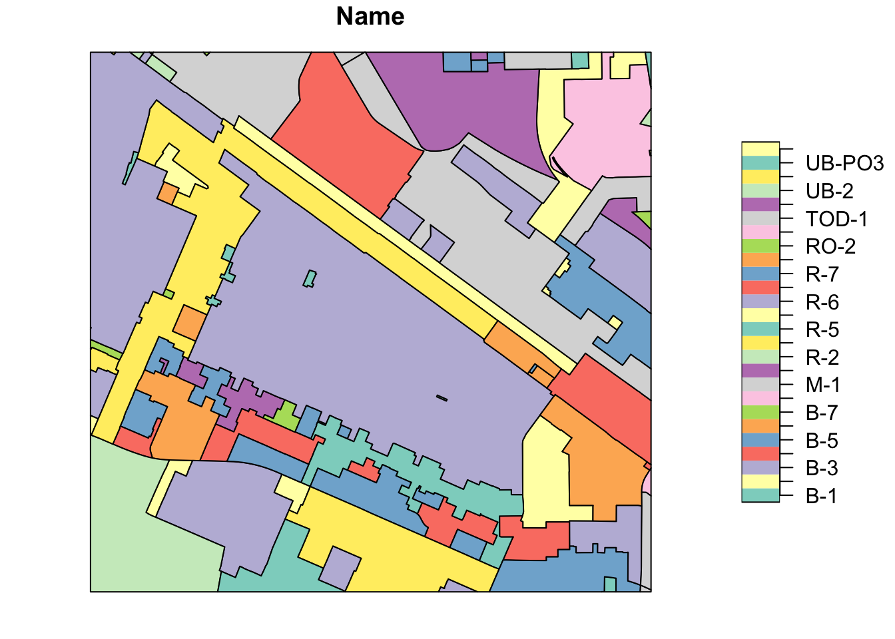
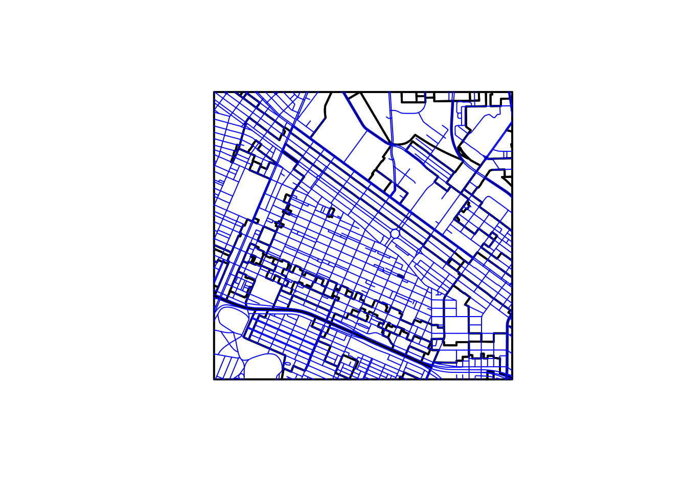
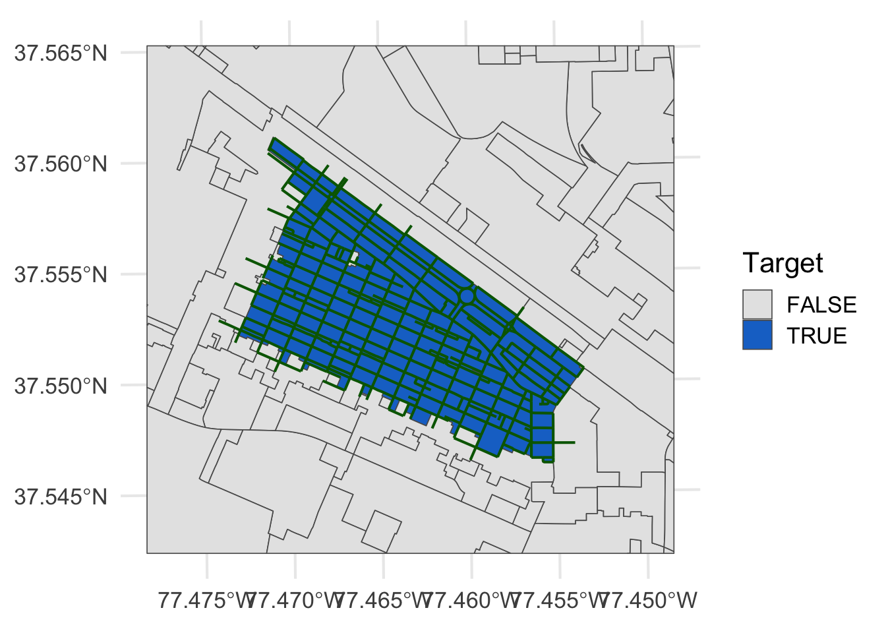

Connecting points creates more complicated data types—vector data—that represent lines and polygons.
In the points topic, every row of an sf object was a single coordinate. Here we connect those coordinates into more complicated vector types: lines (LINESTRING) and polygons (POLYGON and MULTIPOLYGON). They are still sf objects, so the same st_* functions and the same plotting routines (both built-in plot() and ggplot() with geom_sf()) work on them.
We will:
Build LINESTRING and POLYGON objects de novo from a data.frame of coordinates.
Make polygons from the map data that comes with ggplot2.
Use buffers, unions, and hulls to build polygons around real sampling locations.
Measure the land cover inside polygons we have built.
Import vector data from ESRI shapefiles, the format most GIS software produces.
Use spatial joins to select and combine features by where they are instead of by a key column.
Lines
Lines de novo
A line is just a sequence of points, connected in the order given. So let’s start with some points. Here I make 10 random locations in central Virginia, five belonging to Rodney and five to Sarah, each with a bit of Data attached.
id Data Longitude Latitude
1 Rodney 98.759269 -78.48553 35.66016
2 Rodney 49.790138 -78.77618 35.55627
3 Rodney 60.124115 -78.19129 37.35197
4 Rodney 33.994487 -77.69823 37.11616
5 Rodney 1.194861 -77.94678 38.75742
6 Sarah 74.258820 -77.90507 36.81489
7 Sarah 34.504144 -78.22234 38.30332
8 Sarah 41.818465 -77.80990 35.94615
9 Sarah 111.708637 -77.69536 36.26706
10 Sarah 14.447750 -78.98146 38.77788
Just as before, we turn these into POINT objects with st_as_sf(), telling it which columns hold the coordinates and what coordinate reference system (CRS) they are in (EPSG 4326 is plain longitude/latitude).
Simple feature collection with 10 features and 2 fields
Geometry type: POINT
Dimension: XY
Bounding box: xmin: -78.98146 ymin: 35.55627 xmax: -77.69536 ymax: 38.77788
Geodetic CRS: WGS 84
id Data geometry
1 Rodney 98.759269 POINT (-78.48553 35.66016)
2 Rodney 49.790138 POINT (-78.77618 35.55627)
3 Rodney 60.124115 POINT (-78.19129 37.35197)
4 Rodney 33.994487 POINT (-77.69823 37.11616)
5 Rodney 1.194861 POINT (-77.94678 38.75742)
6 Sarah 74.258820 POINT (-77.90507 36.81489)
7 Sarah 34.504144 POINT (-78.22234 38.30332)
8 Sarah 41.818465 POINT (-77.8099 35.94615)
9 Sarah 111.708637 POINT (-77.69536 36.26706)
10 Sarah 14.447750 POINT (-78.98146 38.77788)
To make lines, we need to collapse each person’s five points into a single row. We group_by() the id, summarize() the Data column (here by its mean), which leaves a MULTIPOINT geometry for each group, and then st_cast() that collection into a LINESTRING.
Because the geometry is spatially aware, we can ask spatial questions of it. The physical length of each LINESTRING (in meters, since sf computes distances on the globe for lat/lon data):
And the area of the convex hull that encloses all the lines. Here I st_union() the two lines into one geometry, wrap a hull around it, measure its area, and use the units library to express it in square kilometers.
library(units)
udunits database from /Library/Frameworks/R.framework/Versions/4.5-arm64/Resources/library/units/share/udunits/udunits2.xml
Every geometry can also be written as Well Known Text (WKT), a plain-text description of the shape and its coordinates. This is handy when you want to see exactly what a geometry contains.
A polygon is simply a line whose first and last coordinates are exactly the same, so it closes upon itself. To see this, here are our points again with the first point of each person repeated at the end of their sequence.
df.p <- df[c(1:5, 1, 6:10, 6), ]df.p
id Data Longitude Latitude
1 Rodney 98.759269 -78.48553 35.66016
2 Rodney 49.790138 -78.77618 35.55627
3 Rodney 60.124115 -78.19129 37.35197
4 Rodney 33.994487 -77.69823 37.11616
5 Rodney 1.194861 -77.94678 38.75742
1.1 Rodney 98.759269 -78.48553 35.66016
6 Sarah 74.258820 -77.90507 36.81489
7 Sarah 34.504144 -78.22234 38.30332
8 Sarah 41.818465 -77.80990 35.94615
9 Sarah 111.708637 -77.69536 36.26706
10 Sarah 14.447750 -78.98146 38.77788
6.1 Sarah 74.258820 -77.90507 36.81489
Polygons de novo
We make polygons the same way we made lines, just casting to POLYGON instead. st_cast() closes each ring for us by repeating the first point.
Since the points are random, the order they are connected in is random too, so these polygons may cross over themselves. Real polygons are made from points that go around the outside of a shape in order.
Polygons from Data Frames
For real shapes, we can grab polygon data from ggplot itself. The map_data() function (it uses the maps library) returns a data.frame of coordinates. Here are the counties of Virginia.
library(maps)
Attaching package: 'maps'
The following object is masked from 'package:purrr':
map
Each county is identified by its group. If we look at a couple of counties, it is easier to see how the polygons are constructed: the points (in color) are connected in order to make the outline (the shaded polygon).
We can also layer sf objects on top of these. Here are the lines we made earlier on top of the counties. Notice that we use coord_sf() here, since we are now mixing in an sf layer.
Lines and polygons become really useful when we build them around real data. Here we will use a set of dogwood trees sampled along a transect running from the city of Richmond, Virginia south to Pocahontas State Park. Each row is a maternal tree, and the columns are:
Mother: The type of maternal tree, Cultivar or Native.
Habitat: Where it was sampled; Urban and Suburban cultivars (north and south of 37.45°N), and Native trees in the park.
Tree: An ID for the tree.
Longitude and Latitude: Its location (decimal degrees, WGS84).
N: The number of offspring (seeds) collected from that tree.
Preliminary: Whether it is one of a subset of 5 trees from each habitat.
We will start with just the Preliminary trees. While we are at it, let’s sort them from south to north with arrange(). This has to happen beforest_as_sf(), since that function uses up the Latitude and Longitude columns to make the points. Having the trees in order will come in handy when we make a transect below.
Rows: 58 Columns: 7
── Column specification ────────────────────────────────────────────────────────
Delimiter: ","
chr (3): Mother, Habitat, Tree
dbl (3): Longitude, Latitude, N
lgl (1): Preliminary
ℹ Use `spec()` to retrieve the full column specification for this data.
ℹ Specify the column types or set `show_col_types = FALSE` to quiet this message.
Buffers and areas are measured in the units of the coordinate reference system, and degrees of longitude and latitude are not a fixed distance on the ground. So before building anything, we reproject the trees into UTM Zone 17N (EPSG 32617), whose units are meters.
trees |>st_transform(crs =32617) -> treesst_crs(trees)$Name
A buffer is the polygon covering everything within some distance of a feature. Buffering a point makes a circle, so st_buffer() turns each tree into a POLYGON representing its neighborhood. Here I use 250 m.
Notice that each row keeps all of the tree’s data; only the geometry has changed. Each of these is 196,260 m², slightly less than \(\pi r^2 =\) 196,350 m², because the circle is approximated by a polygon with many short straight sides.
st_area(nbhd) |>head(n =3)
Units: [m^2]
[1] 196259.8 196259.8 196259.8
Unions
We can merge polygons together with st_union(). When we summarize() an sf object, its geometries are unioned for each group, so this gives us one (MULTIPOLYGON) neighborhood for each habitat.
Another way to describe the area a group of points occupies is the convex hull, the smallest convex polygon containing all of them (think of stretching a rubber band around them). We union the points in each habitat and wrap a hull around each.
trees |>group_by(Habitat) |>summarize() |>st_convex_hull() -> hullshulls |>mutate(Area =set_units(st_area(hulls), km^2))
Finally, a transect running from the southernmost to the northernmost tree. Because we sorted the trees by latitude when we read them in, those are just the first and last rows, which we can grab with slice() (n() is the number of rows). Then, as with the lines at the start of this topic, we combine the points and cast them into a LINESTRING.
trees |>slice(c(1, n())) |>summarize() |>st_cast("LINESTRING") -> transectst_length(transect) |>set_units(km)
15.40684 [km]
Buffering a line makes a corridor of a fixed width along it.
transect |>st_buffer(dist =250) -> corridor
Here they all are together.
ggplot() +geom_sf(aes(fill = Habitat), alpha =0.2, data = hulls) +geom_sf(fill ="grey60", color =NA, data = corridor) +geom_sf(aes(fill = Habitat), data = nbhd) +geom_sf(data = trees, size =0.5) +coord_sf() +theme(axis.text.x =element_text(angle =45, hjust =1))
Land Cover
A natural question about the neighborhoods we just built is: what is in them? The National Land Cover Database (NLCD) classifies every 30 m × 30 m cell of the United States into one of 16 land cover classes (open water, four intensities of development, three kinds of forest, wetlands, agriculture, etc.). Data like this, a grid of cells each holding a value, are called a raster, and we will learn to work with them directly in a later topic.
For now, we will treat that part as a black box. The function get_landcover() takes an sf object of polygons, finds the NLCD cells inside each one (using the 2021 NLCD for this study area), and returns the proportion of each polygon covered by each of seven broad categories: Water, Developed, Barren, Forest, Shrub/Grass, Agriculture, and Wetland. You can load it directly from its web address with source(), or download the file into your project and source( "get_landcover.R" ).
There is one row for each tree in each category (15 trees × 7 categories = 105 rows), and each row carries along the tree’s data. That makes it easy to summarize with normal dplyr routines. Here is the average proportion of each category, for each habitat.
The .groups = "drop" is new. When you summarize() data grouped by more than one variable, only the last grouping (Category) is removed, so the result would still be grouped by Habitat. dplyr prints a message to warn you about this:
`summarise()` has regrouped the output.
ℹ Summaries were computed grouped by Habitat and Category.
ℹ Output is grouped by Habitat.
ℹ Use `summarise(.groups = "drop_last")` to silence this message.
ℹ Use `summarise(.by = c(Habitat, Category))` for per-operation grouping
(`?dplyr::dplyr_by`) instead.
[1] "Habitat"
That leftover grouping is easy to forget, and it changes how any later mutate() or summarize() works on the data (e.g., a sum() would be computed within each Habitat instead of over the whole table). We are going to reuse habitat_lc for a table, a plot, and a comparison with the transect, so .groups = "drop" hands it back as a plain, ungrouped table.
ggplot(habitat_lc, aes(Category, Proportion, fill = Habitat)) +geom_col(position ="dodge") +coord_flip() +labs(x =NULL, y ="Average proportion of a 250 m neighborhood")

The habitats are clearly different. The Urban trees live in neighborhoods that are almost entirely developed, the Native trees in mostly forested ones, and the Suburban trees in between, with a bit more forest and wetland mixed in.
The same function works on any polygons, not just buffers. Here is the land cover in the transect corridor compared with the habitat neighborhoods.
A single straight transect averages over everything between its endpoints, so it does not look like any of the places the trees actually are.
Shapefiles
Most of the time we are not going to make vector data by hand; we will load it from a file someone else created, often with GIS software such as ArcGIS or QGIS. This section is a tour of what that looks like in R. A very common format for this is the ESRI shapefile, which can hold POINT, LINESTRING, POLYGON and other vector types.
The first thing to understand is that a shapefile is not an actual file. It is a collection of several files with the same name and different extensions, and they are usually zipped up into a single archive.
Downloading the Archives
For this topic we will use roads and zoning districts for Richmond, Virginia, made available by the GIS Department of the City of Richmond. Here are the two archives in the course data repository.
You can download them with your browser and move them into your project folder, or you can have R download them. The destfile argument says where to save each archive. Here I put them in a temporary folder (tempdir()) so the raw files do not clutter up the project, but on your own computer you will usually save them into a data folder in your project (e.g., destfile = "data/Roads.zip") so you only have to download them once.
Before we can use them, we need to unzip them. You can do this in your computer’s file browser, or have R do it. The exdir argument tells unzip() where to put the expanded files.
Depending upon how the archives were created, they may expand into a subfolder or just put a pile of files in the same folder. For this example, there is one of each: the Zoning_Districts.* files are expanded directly into the folder and the roads are expanded into a subfolder named Centerlines-shp.
The expanded shapefile components: five Zoning_Districts files and the Centerlines-shp folder.
Reading layer `Zoning_Districts' from data source
`/private/var/folders/ph/r0036_7d65x3k680vc73qbj40000gn/T/RtmpFmy1Kd/Zoning_Districts.shp'
using driver `ESRI Shapefile'
Simple feature collection with 634 features and 14 fields
Geometry type: MULTIPOLYGON
Dimension: XY
Bounding box: xmin: 11743500 ymin: 3687944 xmax: 11806060 ymax: 3744741
Projected CRS: NAD83 / Virginia South (ftUS)
The result is an sf object. The attributes from the .dbf file are put into the data.frame and the geometry column is built from the .shp file. Each row here is a MULTIPOLYGON.
Let’s drop the ones we do not need. Shape__Are and Shape__Len are the area and perimeter of each polygon, which we can always recalculate with st_area() and st_perimeter().
Spatial data sets can be combined using their positions: which features intersect, touch, contain, or are within some distance of each other. These are called spatial joins, and there are a lot of them. Check out the sf cheatsheet for the full list.
A Second Data Set
Let’s load in the roads. This shapefile was in the Centerlines-shp subfolder.
Let’s focus on the area around VCU and The Fan. The large residential district in the middle of the Fan is OBJECTID == 368. To get a region around it, I buffer that polygon by 1500 feet (the units of this projection), take the bounding box of the result, and then crop all the districts to that box.
Warning: attribute variables are assumed to be spatially constant throughout
all geometries
plot(theFan["Name"])

st_crop() will warn you that it assumes the attributes are the same across each geometry. That just means that when it cuts a district in half at the edge of the box, the half it keeps gets all the original attributes, which is what we want.
Zoning Categories
The Name column of the districts holds Richmond’s zoning codes, and there are a lot of them. Since these are categories, let’s make the column a factor and look at its levels.
That is 26 different codes in this small area alone, which is far too many to tell apart by color on a map. But the codes have a structure: each one starts with a prefix for its general type of use (R for residential, B for business, M for industrial, etc.), and the rest of the code is detail we do not need here. In the Factors topic, we used fct_collapse() from forcats to combine several levels into one. We give it each new level, with the vector of old levels that go into it.
The new level names with spaces in them need backticks, just like column names with spaces. Any level we do not mention is left as it is, so if you crop a different part of the city and new codes show up, they will appear as their own categories (add other_level = "Other" to lump them all together instead).
Notice that geom_sf() draws the axes in longitude and latitude, even though the data are in feet. It converts the coordinates for display without changing the data.
Cropping the Roads
We can crop the roads to the same box.
roads |>st_crop(st_bbox(theFan)) -> fanRoads
Warning: attribute variables are assumed to be spatially constant throughout
all geometries
plot(st_geometry(theFan), lwd =2)plot(st_geometry(fanRoads), col ="blue", add =TRUE)

Selecting a Single Zone
Let’s mark the target district in theFan with a new column, and plot it with each district’s OBJECTID as a label so we can see which one it is.
Now for the question we have been building toward: which roads cross this district? The st_filter() function keeps the rows of one sf object that satisfy a spatial relationship with another. By default, that relationship is st_intersects(), meaning they share at least one point.
Those are 553 road segments. To get the street names, we drop the geometry with st_drop_geometry() (otherwise the geometry column comes along for the ride) and use normal dplyr routines.
Street Name
1 Allison St
2 Birch St
3 Boyd St
4 Floyd Ave
5 Grove Ave
6 Hanover Ave
7 Kensington Ave
8 Lombardy Pl
9 Madumbie Lane
10 Monument Ave
11 N Allen Ave
12 N Arthur Ashe Blvd
13 N Brunswick St
14 N Davis Ave
15 N Granby St
16 N Harrison St
17 N Harvie St
18 N Lombardy St
19 N Meadow St
20 N Morris St
21 N Mulberry St
22 N Plum St
23 N Robinson St
24 N Rowland St
25 N Shields Ave
26 N Stafford Ave
27 N Vine St
28 Park Ave
29 Ryland St
30 S Plum St
31 S Stafford Ave
32 Strawberry St
33 Stuart Ave
34 Stuart Cir
35 Trouvaille Al
36 W Franklin St
37 W Main St
38 West Ave
39 <NA>
And we can plot them on top of the districts, with the target highlighted.
ggplot() +geom_sf(aes(fill = Target), data = theFan) +geom_sf(color ="darkgreen", data = targetRoads) +scale_fill_manual(values =c("grey90", "dodgerblue3"))

To use a different relationship, pass it as the .predicate. For example, st_filter( fanRoads, target, .predicate = st_within ) would keep only the road segments that lie completely inside the district.
st_filter() only keeps or drops rows. To bring the data from one layer over to another, use st_join(). It keeps every row of the first layer and adds the columns of whichever features in the second layer it intersects; it is the geometries, not a shared column, that decide which rows go together. Here every road segment picks up the zoning Category of the district(s) it touches.
Category n
1 Residential 2030
2 Business 244
3 Urban Business 227
4 Industrial 166
5 Transit-Oriented 108
6 Institutional 41
7 Residential Office 24
A segment that crosses from one district into another touches both, so it shows up once for each.
Finally, st_intersection() cuts one layer by another, keeping only the parts that overlap. Here it trims the road segments at the edge of the target district, so we can measure how much road is actually inside it.